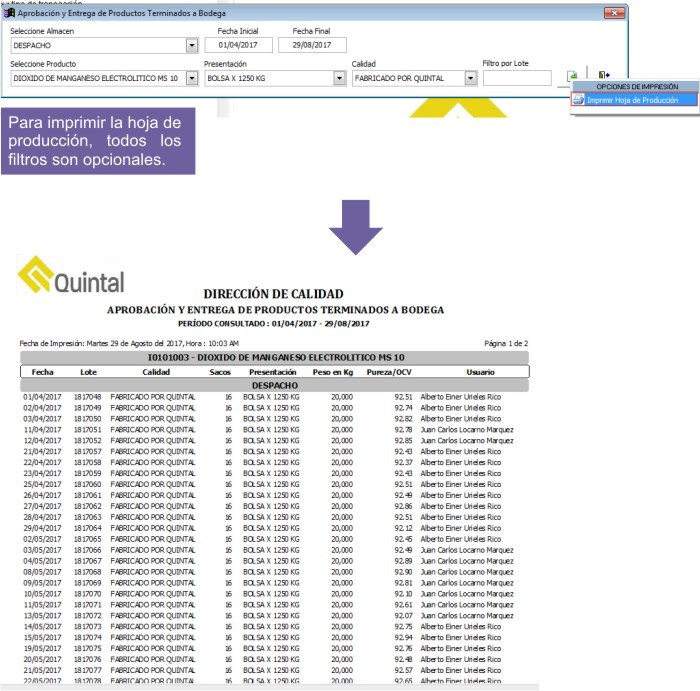

Consulta aprobación y entrega de productos terminados a bodega¶
Ubicación¶
| Módulo: | Real Q |
|---|---|
| Grupo: | Consultas |
| Descripción: | Consulta aprobación y entrega de productos terminados a bodega |
Introducción¶
Aquí puede obtener una “hoja de producción” que le permitirá conocer los productos sólidos que han sido terminados y están disponibles para despacho.
Además, en esta interfaz podrá imprimir rótulos para las estíbas.
Casos de Uso¶
Usted podrá remitirse a este informe para:
- Conocer el peso, la pureza, el lote, la fecha y el usuario de un producto disponible.
Filtros aplicables¶
Podrá filtrar la información por:
- Almacén
- Producto
- Proceso
- Rango de fechas
- Lote
- Presentación
- Calidad
Opciones de salida¶
Impresión

Imprimir Rótulos¶
- Para imprimir los rótulos deberá tener presente el lote que desea identificar.
- Deberá además llenar TODOS los filtros disponibles.
- Cada lote cuenta con cierta cantidad de bolsas de x peso.
- Cada producto está configurado para que sus estibas llevén un peso máximo x.
- Al momento de hacer la rotulación se dividirá: El Peso Estiba/Número de bolsas/Peso de cada bolsa. Para sacar una etiqueta por estiba.

Información en la etiqueta:
- Producto
- Calidad
- Lote
- Sacos
- Peso total
- Concentración
- Fecha
- Analista
Ejemplo:
Un Lote ### de 50 sacos de 50kg cada uno. El producto X, está configurado para 1000 kg por estiba. El resultado serán 3 Etiquetas con la siguiente información:
Etiqueta 1:
- Producto X
- Lote ###
- Sacos: 20
- Peso: 1000Kg
Etiqueta 2:
- Producto X
- Lote ###
- Sacos: 20
- Peso: 1000Kg
Etiqueta 3:
- Producto X
- Lote ###
- Sacos: 10
- Peso: 500Kg